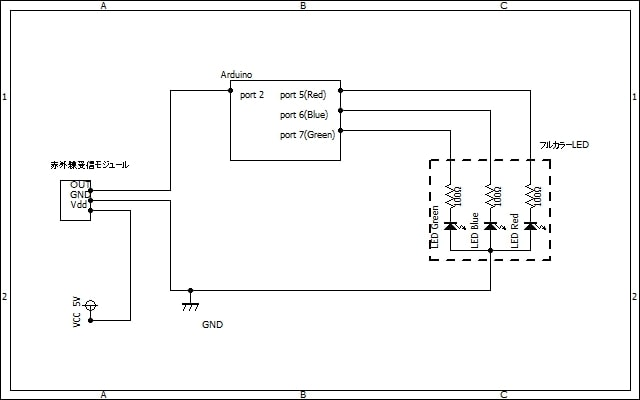
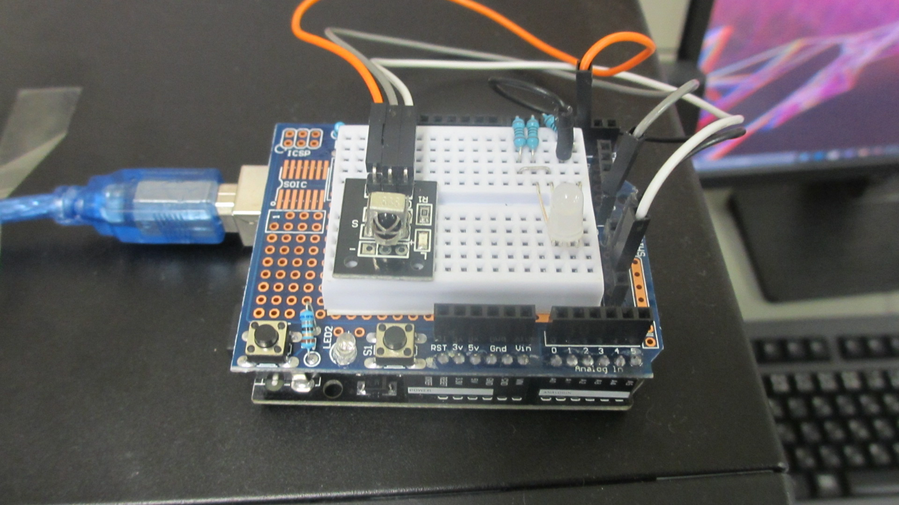
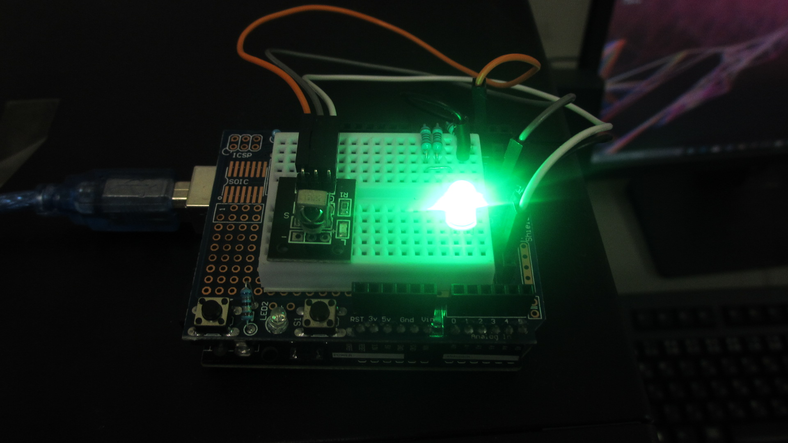
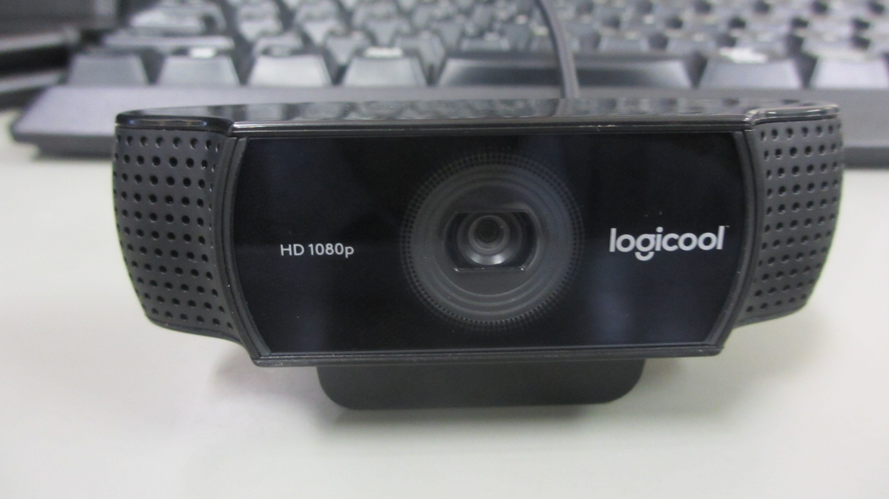
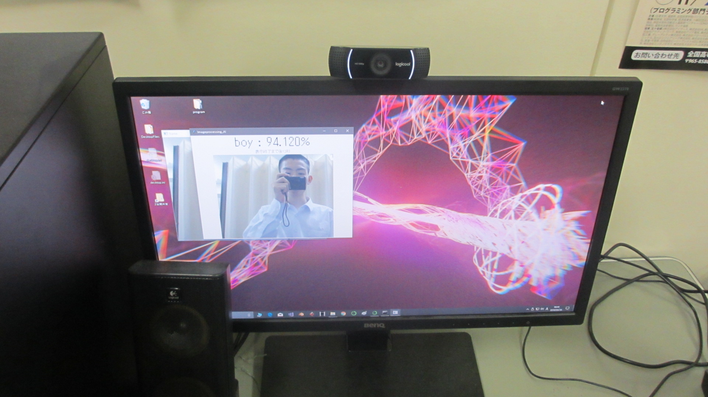

画像処理人工知能
- 製作動機・製作目標
- 製作方法とか
- pythonのtensorflowを使って人工知能を製作する。
- リモコンを使って遠隔で操作できるようにする。
- 判定結果はGUIで視覚的に表示する。
- 死なない。（HP作成が死にそう・・・)
- 製作内容とか
- tensorflow
- keras
- pyserial
- opencv
- tkinter
- pillow
- 人工知能の学習部分
- 人工知能の判定部分
- シリアル通信を受信する部分
- 判定を行う写真を撮影する部分
- 視覚的な表現を行うGUI部分
- 製作結果
- 謝辞とかそういった類のもの
- multiprocessing --- プロセスベースの並列処理
- PySerial】Python×Arduinoで制御してみる1【Lチカ】
- OpenCV - imread()、imwrite() で画像をファイルに入出力する
- PythonのTkinterを使ってみる
- Tkinterで作成したウインドウにOpenCV-Pythonの画像を表示
- 付録
学校の課題研究の授業で製作した目覚まし時計を改善するための追加機能として人工知能を搭載するという項目が挙がり人工知能に興味を持ったため。
人工知能で画像を処理し、性別を判別して表示するようなものを作成する。
64bitのWindows10搭載デスクトップパソコンでpython3.6.8とArduinoを使って製作した。
pip installやconda installで以下のライブラリをインストールする。
人工知能を製作するにあたり、Python3.7.xの最新系列ではライブラリが使用できなくなってしまうためAnacondaでPython3.6.8の仮想環境を整えた。
まず初めに本製作の基幹となる人工知能を作成した。
より高精度な判定を目指すために学習用データを男女ともに約500枚ずつ用意した。
人工知能についての理解、環境構築、製作の際に以下の動画を参考にして作成した。
この動画は人工知能や環境構築についてとてもわかりやすく解説されており、初心者同然の私でもすんなりと人工知能を大まかに理解、思うような実装ができた。
次に、リモコンを使って遠隔操作するためにArduinoを使ってリモコンからの信号を受け取り、Windowsパソコンへ送信する受信機を製作する。
学校での課題研究で使ったものを改良して使用する。
課題研究で製作した受信機には受信する信号が不安定でリモコンと受信機との距離が極めて近くなければ正常の動作が行われないという問題点があった。
この問題の原因は、受信機とArduinoの接続ポートを間違えていたと判明したため正しいポートに接続した。また、信号を受信したかどうかが分かりづらかったために受信機にLEDを搭載し、信号を受信したかどうかを分かりやすくした。
以下は製作した受信機の回路図(図1)と受信機の写真(図２)である。
Arduinoソースコードはサイト末に他のソースコードとまとめて記載する。

受信機の回路図(図１)

受信機の写真1(図２)

受信機の写真2(図3)
次に、Windowsパソコン側でPythonを使ってArduinoから送信された信号を受信する部分である
本製作ではPythonによって記述するプログラムを
上記の5つの機能を分けて実行させるためにmultiprocessingライブラリのProcessを使って並列処理を行う。
並列処理によって、Arduinoからの信号を受信しながら、写真を撮影したり、GUIを表示したりすることを同時にする事が出来るようになる。
Arduinoからの信号をシリアル通信を使って受信した。
Arduinoから信号を受け取るするためにpyserialライブラリを使った。
また、信号を受け取る動作を関数としてまとめ、multiprocessingライブラリのQueueを使って前述した並行処理で動作している他の関数に値を受け渡す。
最後は判定を行う写真を撮影する部分と視覚的な表現を行うGUI部分である。
写真を撮影するためにWebカメラを使う。(図３)

使用したWebカメラの写真(図4)
プログラムで写真を撮影するためにOpenCVライブラリを使う。画面にWebカメラが撮っている画面を表示し、リモコンのボタンを押したタイミングで写真を撮ることが出来るようにする。
リモコンのボタンが押され、写真が撮られたことを確認したら人工知能の判定部分を実行し、その後GUIを起動して得られた判定数値を撮影した写真とともに表示する。
GUIはTkinterライブラリを使って製作し、写真はPillowライブラリを使って表示した。
以上の関数をまとめたプログラムを実行することで写真を撮影し、撮影した写真に映った人物が[boy]か[girl]かを判定する。

GUIの表示例(図5)
想像していたモノが完成した。
学習データが不足していたのか、偏っていたのか、判定させるべきでなかったのかは分からないが、何度かの実験を行った結果は正答率約70％と低い成果が出た。
しかし、文化祭で体験した人に楽しんでもらう分には十分な成果（？）といえるのではないだろうか。（言い訳）
本製作はなんとか発表することが出来たので、大成功と言えるだろう。
本製作では多くの人の助けや知恵を借りたことで見事に大成功（？）をおさめることが出来た。
様々な仕事を押し付けたり、懇願したり、強要したりしたPC部員の皆さん。ご迷惑をおかけしました。晴れて引退できます。（しません。九月だったかにある競技プログラミングの大会に出ます。）
多くのことで私を頼ってくださった、部内外の皆様。完全にフォローに回れずすいませんでした。幾分か余裕を持って相談に来ていただければゆっくりと丁寧に説明できていたかと思いますが、自分のことで手一杯でした。ごめんなさい。
各部分を製作する際に参考にさせていただいたサイト様、ありがとうございました。この場でご紹介させて頂きます。
製作の際にたくさん躓いたので解決するために見たサイトの数が多すぎるため、他のサイトの紹介は割愛させていただきます。
本項では、完成したプログラムを掲載する。
python リスト
Arduino リスト